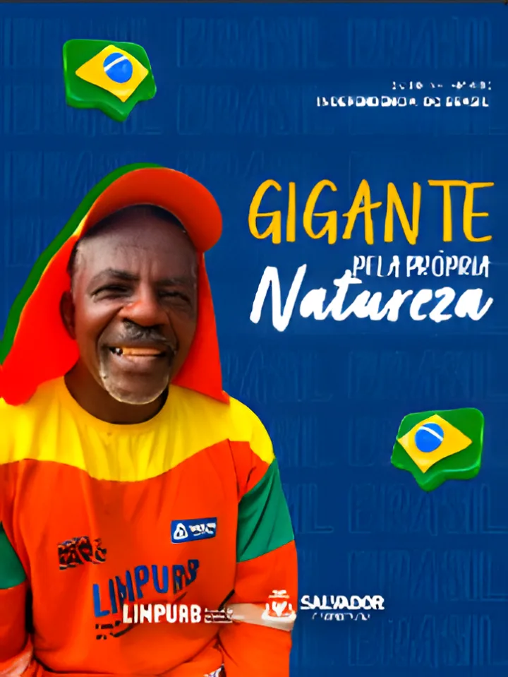
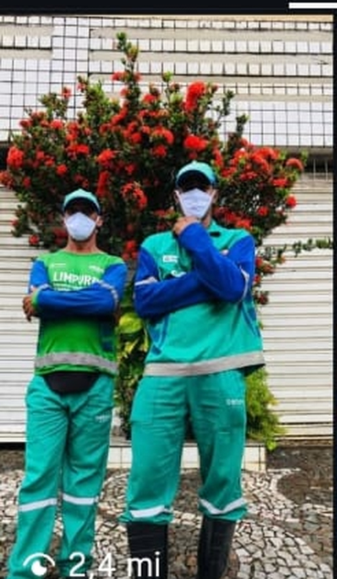
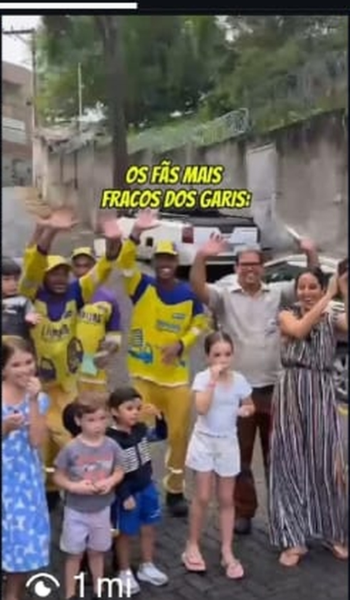
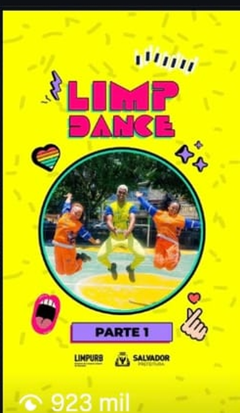
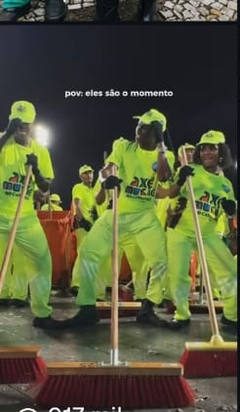
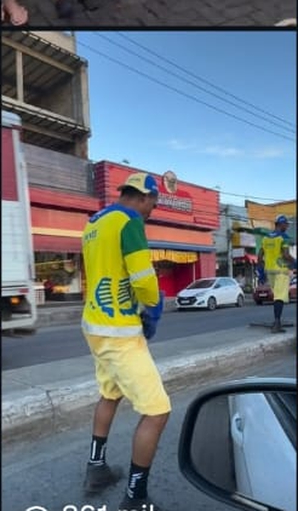
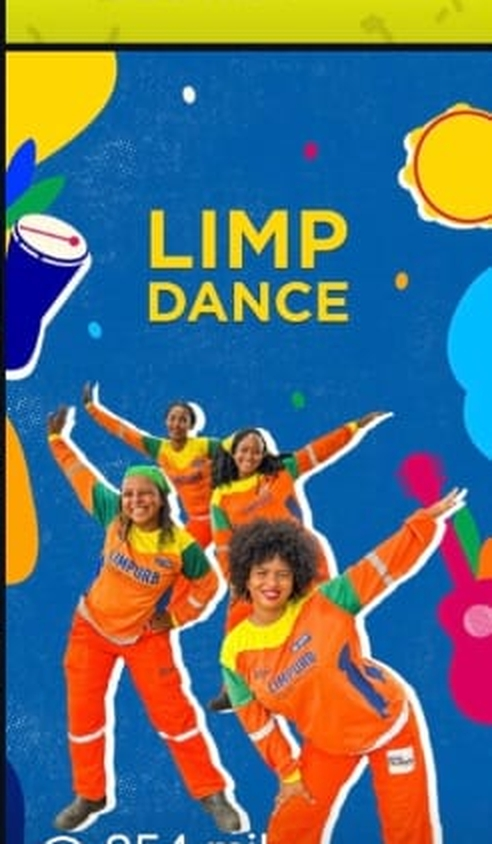
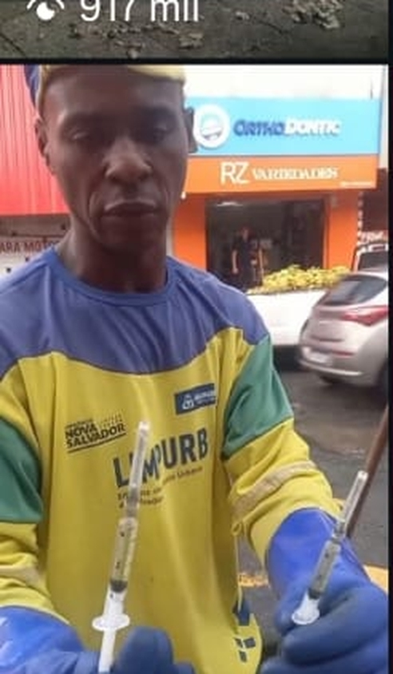
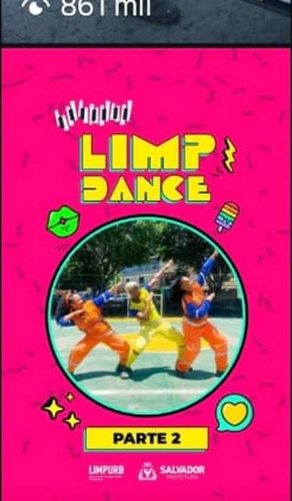

01
Limpurb — Salvador
2020 — hoje · @limpurb
Toda a comunicação da Empresa de Limpeza Urbana de Salvador no Instagram. Eu não só planejo: vou para a rua, gravo com os agentes, edito os vídeos e escrevo as legendas.
- Seguidores
- 44 mil
- Publicações
- 2.531
- Reel mais visto
- 80,5 mil
- 01 Pauta
- 02 Captação na rua
- 03 Edição
- 04 Legenda e publicação
O Impacto da Minha Gestão
4x mais seguidores
Eu assumi o perfil da Limpurb com 10 mil seguidores. Através de conteúdo intencional e uma gestão estratégica focada em resultados reais, transformei a presença digital da marca e ultrapassamos a marca de 44 mil seguidores orgânicos.
Insights & Resultados
+150%
Contas alcançadas no primeiro trimestre após a aplicação da nova estratégia.
10k+
Interações com o conteúdo, mantendo a comunidade engajada e ativa organicamente.
58k+
Visualizações em um único Reel, trazendo autoridade e visibilidade massiva para a marca.
Reels que gravei e editei








Visualizações no Instagram em setembro de 2026.